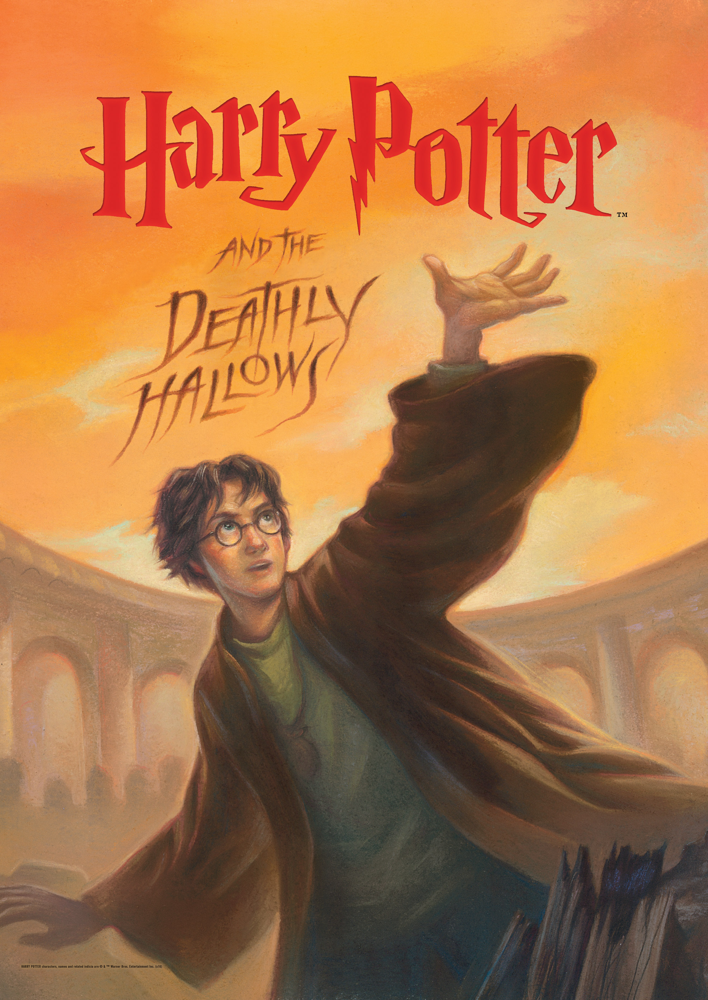

Harry Potter and the Deathly Hallows (Book 7)
Synopsis
Rowling's stunning conclusion to her bestselling Harry Potter series is now available in paperback. As a farewell to the series, Deathly Hallows is everything fans of Harry Potter could hope for.
Download PDF- Chapter 01 - The Dark Lord Ascending
- Chapter 02 - In Memoriam
- Chapter 03 - The Dursleys Departing
- Chapter 04 - The Seven Potters
- Chapter 05 - Fallen Warrior
- Chapter 06 - The Ghoul in Pyjamas
- Chapter 07 - The Will of Albus Dumbledore
- Chapter 08 - The Wedding
- Chapter 09 - A Place to Hide
- Chapter 10 - Kreacher's Tale
- Chapter 11 - The Bribe
- Chapter 12 - Magic is Might
- Chapter 13 - The Muggle-Born Registration Commission
- Chapter 14 - The Thief
- Chapter 15 - The Goblin's Revenge
- Chapter 16 - Godric's Hollow
- Chapter 17 - Bathilda's Secret
- Chapter 18 - The Life and Lies of Albus Dumbledore
- Chapter 19 - The Silver Doe
- Chapter 20 - Xenophilius Lovegood
- Chapter 21 - The Tale of the Three Brothers
- Chapter 22 - The Deathly Hallows
- Chapter 23 - Malfoy Manor
- Chapter 24 - The Wandmaker
- Chapter 25 - Shell Cottage
- Chapter 26 - Gringotts
- Chapter 27 - The Final Hiding Place
- Chapter 28 - The Missing Mirror
- Chapter 29 - The Lost Diadem
- Chapter 30 - The Sacking of Severus Snape
- Chapter 31 - The Battle of Hogwarts
- Chapter 32 - The Elder Wand
- Chapter 33 - The Prince's Tale
- Chapter 34 - The Forest Again
- Chapter 35 - King's Cross
- Chapter 36 - The Flaw in the Plan
- Epilogue - Nineteen Years Later